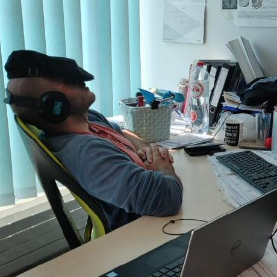

<div class="about-container">
  <div class="row">
    <div class="col-md-12">
      <h2>Research &amp; <em>Experience</em></h2>
      <div class="under-line"></div>

      


      <p align="justify"><em>WORK EXPERIENCE</em><br>
        <b>March 2020 – February 2026:</b> Postdoctoral Researcher, Applied Machine Learning group<br>
         Research Centre Jülich, Jülich, Germany<br>
        <i>During this period the affiliation was shared between the following two institutes:<br>
        Institute of Systems Neuroscience, Heinrich Heine University Düsseldorf, Düsseldorf, Germany<br>
        Institute of Neuroscience and Medicine (INM-7: Brain and Behaviour), Research Centre Jülich, Jülich, Germany
      </i>
      </p>
      <p align="justify">
        After the doctoral studies the questions around the brain drifted from
        "is someone there?" toward "how old is this brain?".
      </p>

      <p align="justify">
        The time spent has been shared between the many technical and sometimes unpopular sides of 
        neuroimaging. From getting different brain scans into a shape where they can
        actually be compared to each other aka Preprocessing, normalization, quality
        control — to the more visible layer: machine learning
        applied to brain-age estimation, benchmarking pipelines and workflows
        end-to-end, and figuring out which combinations of features and models still
        behave when the datasets get bigger and messier.
      </p>

      <p align="justify">
        The day-to-day toolkit is Python, MATLAB, and an unreasonable amount of shell
        scripting, alongside the usual neuroimaging stack and the libraries that keep
        large-scale analyses tractable. And just to keep things from getting boring, all
        of this runs across a range of infrastructure setups — from local workstations to
        high-performance and high-throughput computing clusters.
      </p>
      
      <p align="justify"></p>
        A couple of contributions sit on bookshelves as well — one on structural
        brain-image analysis and computational anatomy, and another on imaging
        approaches to measuring consciousness.
      </p>

      <p align="justify"><em>TEACHING EXPERIENCE</em><br>
        Some of this made its way into the classroom too: Voxel-Based Morphometry
        and applied machine-learning basics taught to Master's students in cognitive
        neuroscience programs, short courses for researchers picking up ML for the
        first time, and — much earlier — a stretch of teaching microprocessors and
        digital systems in an electronics lab.
      </p>
    </div>
  </div>
</div>
